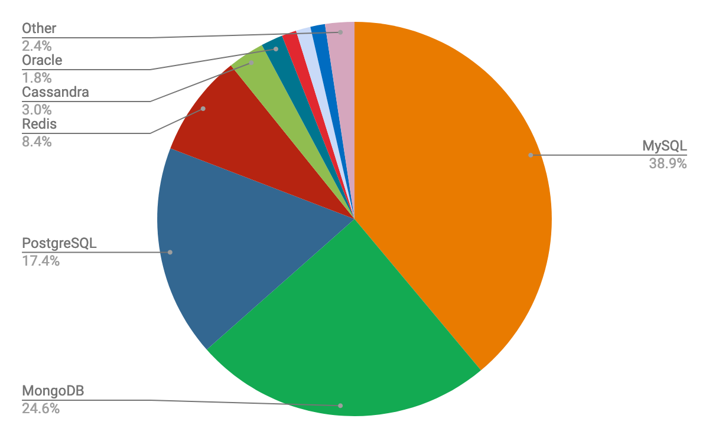
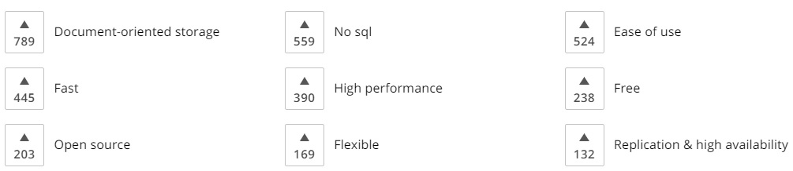
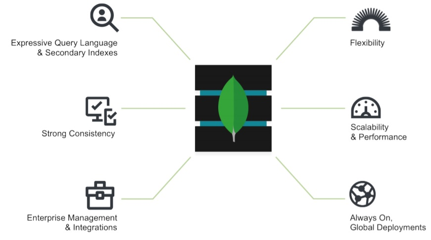
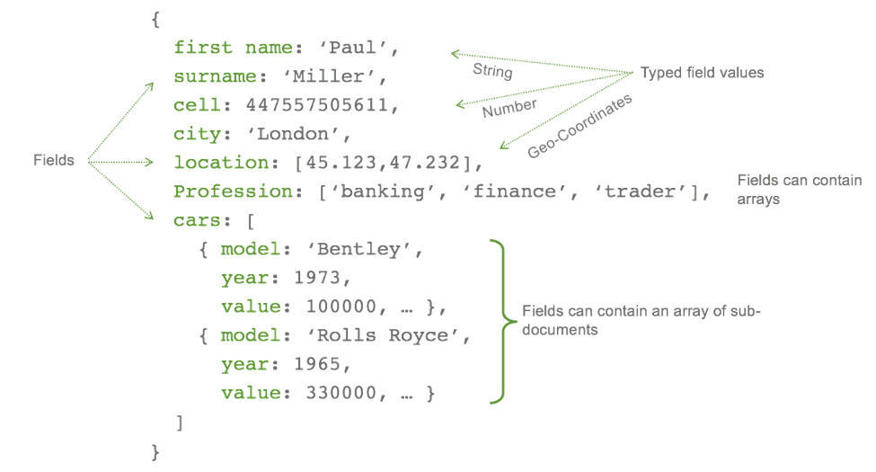
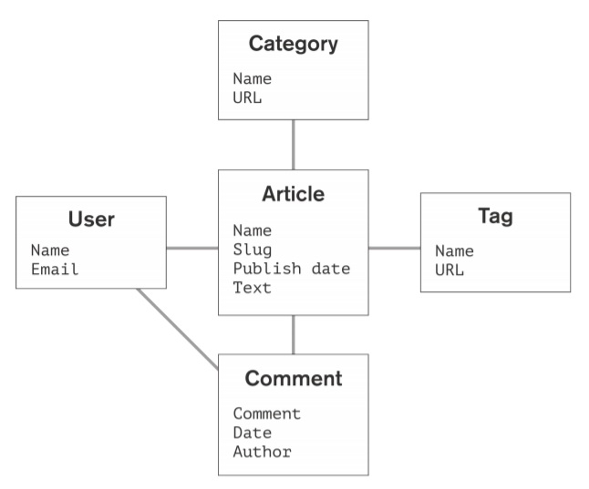
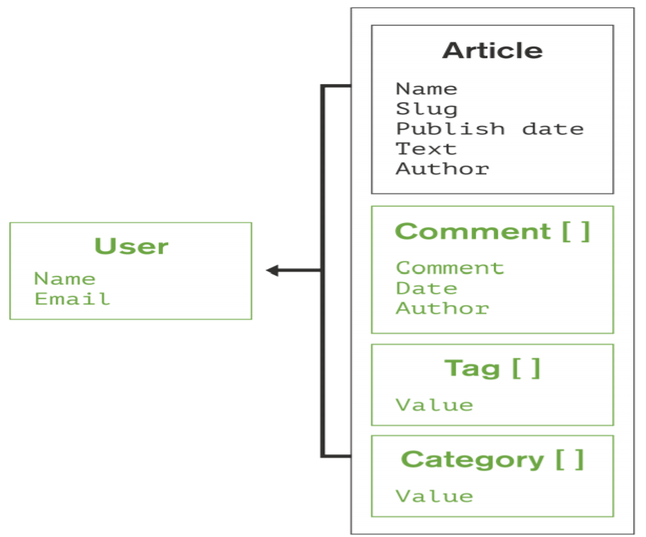
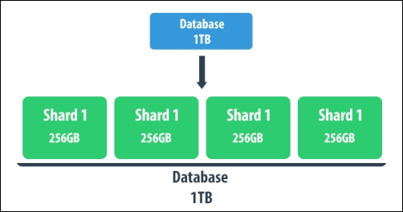
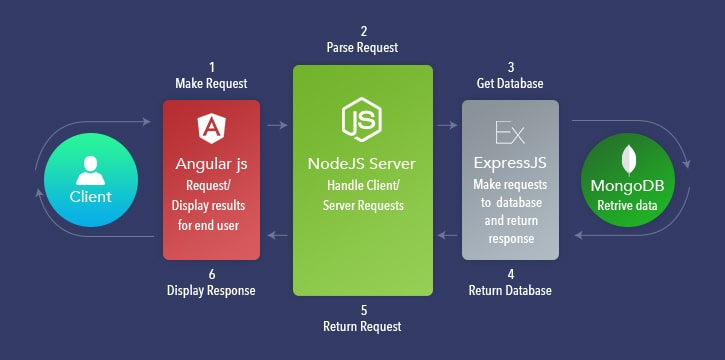

С увеличаването на размера на данните по целия свят се наблюдава и голям интерес около нерелационните база
данни,
известни още като „NoSQL“(Not only SQL). Бизнесът и организациите търсят нови методи за управление на потопа
от данни и
се насочват към алтернативни инструменти и системи за управление на бази данни, които са различни от
традиционните. Тук се намесва MongoDB.
Тя се справя чудесно в приложения, които работят с неструктурирани данни като например:
различни MapReduce приложения, Big-Data системи, Social Network приложения, сайтове за новини и др.
В такива сценарии е трудно да се структурират данните в таблици. Дори да е възможно, това не винаги
е разумно решение, тъй като свързването на отделните таблици може да повлияе значително на
производителността на базата.

Фигура 1. Най-популярните бази данни за 2019
Кой използва MongoDB?
Фигура 2. Някои компании, които използват MongoDB
Защо се използва MongoDB?

Фигура 3. Причини за използването на MongoDB
Какво е MongoDB?

Фигура 4. MongoDB - комбинация на най-доброто от релационния и нерелационния модел
MongoDB е open source система за управление на бази данни, разработена от 10gen, която изполва
документно-ориентиран модел за представяне на различни данни, като ги съхранява като BSON(Binary JSON)
файлове.
Това е една от многобройните нерелационни бази данни, възникнали след 2005г. под името
NoSQL, които се използват в приложения, които работят с големи данни както и с такива,
които не се вписват добре в релационния модел. MongoDB решава проблемите в SQL и традиционният RDBMS,
като предлага висока производителност и скалируемост.
Основни понятия в MongoDB
Инстанция на база данни: В контекста на mongodb сървър, една инстанция на база данни е
физическият контейнер, в който се съхраняват mongodb колекциите. Всяка инстанция си има собствен
набор от файлове, разположени на сървъра. Препоръчително е инстанциите да са на отделни машини.
Колекция: В контекста на mongodb инстанция, колекцията е група от mongodb документи.
Като обект, колекцията е еквивалентна по роля на таблиците в релационните бази данни.
Една колекция съществува само в контекста на една mongodb инстанция.
Колекциите за разлика от sql таблиците не си налагат ограничения под формата на схеми.
Колекциите са динамични обекти и различните документи, които се съдържат в тях, могат да имат
различен вид и да съдържат различни полета.
Код 1. Пример за колекция в MongoDB
Документ: В контекста на mongodb колекция, документът е множество от ключ-стойност полета.
Документите имат динамична схема. Различните документи в една колекция могат да съдържат
различни помежду си типове полета и цялостна структура. Документи са подобни по вид на JSON файлове,
но се съхраняват в по-богатите като възможности и поддържани типове BSON (Binary JSON) файлове.

Код 2. Пример за документ в MongoDB
MongoDB vs RDBMS
RDBMS (SQL Database)
MongoDB (NoSQL Database)
Релационна база данни
Нерелационна, документно ориентирана база данни
Трябва да се помисли за дизайна на базата първо(таблици, структури от данни, релации)
и чак след това може да се започне писането на код
Може да се започне писането на код, без да се знае цялостния дизайн на базата -
той може да се промени по-късно без това да има висока цена, както при RDBMS
Поддържа SQL
Поддържа JSON
Базирана на таблици
Базирана на колеции и двойки - ключ-стойност
Индексиране
Индексиране
Primary Key
Primary Key (Default key _id осигурен от самия MongoDB)
Group By
Aggregation
Поддържа Foreign Key
Не поддържа Foreign Key. Ако е необходимо такова ограничение,
трябва да се реализира чрез код, което е сложно
Поддържа Join
Не поддържа Join, но може да се смени структурата на документа,
като другият документ се включи в първия
Поддържа тригери
Не поддържа тригери
Съдържа схеми, които са предефинирани
Съдържа динамични схеми
Не е подходяща за складиране на йерархични данни
Най-подходяща е за работа с йерархични данни
Вертикално скалиране, като се добавя повече RAM
Хоризонтално скалиране, като се добавят повече сървъри(Sharding)
Уязвима към SQL инжекции
Не е уязвима към SQL инжекции
По-бавна е от NoSQL базите данни
MongoDB е почти 100 пъти по-бърз от традиционните RDBMS

Фигура 5. Примерен реалационен модел на данните за блог приложение

Фигура 6. Примерен документно ориентиран модел на данните за блог приложение
Както се вижда в примера, при MongoDB цялата информация за даден обект
се съдържа в един единствен документ, докато в релационният модел тя е
обикновено разпределена в много таблици.
При документно ориентираният подход, данните са добре локализирани,
което намалява драстично нуждата от свързване на отделни таблици.
Резултатът от това е по-добра производителност и скалируемост,
понеже информацията за даден обект може да се вземе само с едно четене.
MongoDB BSON документите са близки по структура с обектите в програмните езици.
Това улеснява работата на разработчиците при представянето на обектите в базата.
Скалиране на MongoDB
Най-сериозният и често срещан проблем при уеб приложенията е възможността за скалиране.
За да се справи с това, MongoDB предоставя Sharding. Той осигурява
добавянето на огромни масиви от данни разпределени върху няколко машини(shards),
което е пример за хоризонтално скалиране.
Всеки shard съдържа
част от данните и функциите като отделна база данни. Колекцията от няколко shard-а се нарича
single logical database. Операциите се извършват през query рутери, App сървър и конфигурационни сървъри,
които определят коя операция към кой shard трябва да се насочи. Това спомага и за load-balancing-а.
Всичко това звучи добре, но разделянето на данните между отделните машини и менижирането
на read/write операциите между тях не е лека задача.

Фигура 7. Скалиране на MongoDB
MEAN стек

Фигура 8. MEAN стек архитектура
MEAN е колекция от технологии(MongoDB, Express.js, Angular.js, и Node.js), всички от които са написани
на Javascript. Чрез него могат да се разработват уеб приложения от край до край, като се използва само JS.
Предимства на MEAN стек
MEAN е изцяло базиран на JavaScript:
Затова разработчиците обичат да използват MEAN, тъй като им се налага да работят само с един език за
програмиране.
MEAN е open-source технология: Всички продукти в MEAN стека са с отворен код, което
позволява лесен достъп до публичните repository-та и библиотеки.
MEAN е изгоден откъм цена:
Ако погледнем от бизнес перспектива, компаниите не трябва да наемат много експерти в различни области,
а могат да наемат full-stack Javascript програмист, който да разбира от целия процес на разработка на
дадено уеб приложение
Много добър Guide, включващ стъпките за инсталация на MEAN стек и реализирането на базово CRUD приложение,
може да откриете тук -
[5] MEAN stack Guide.